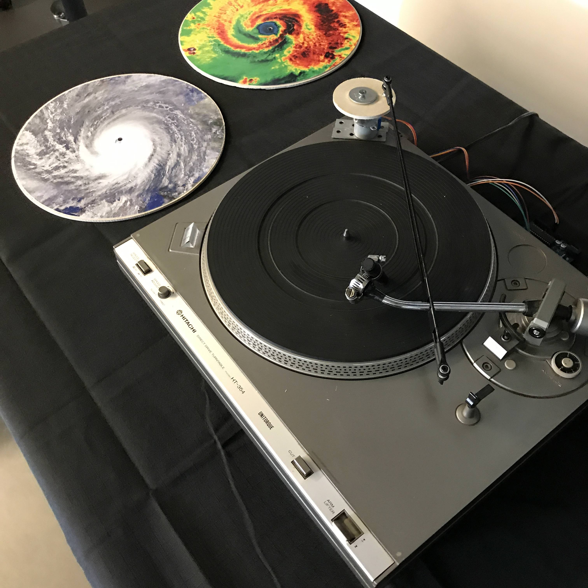
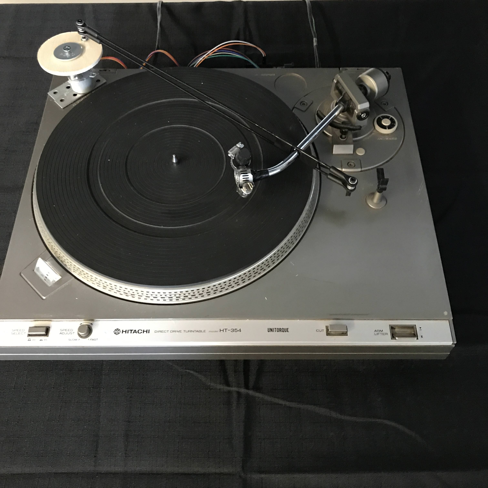
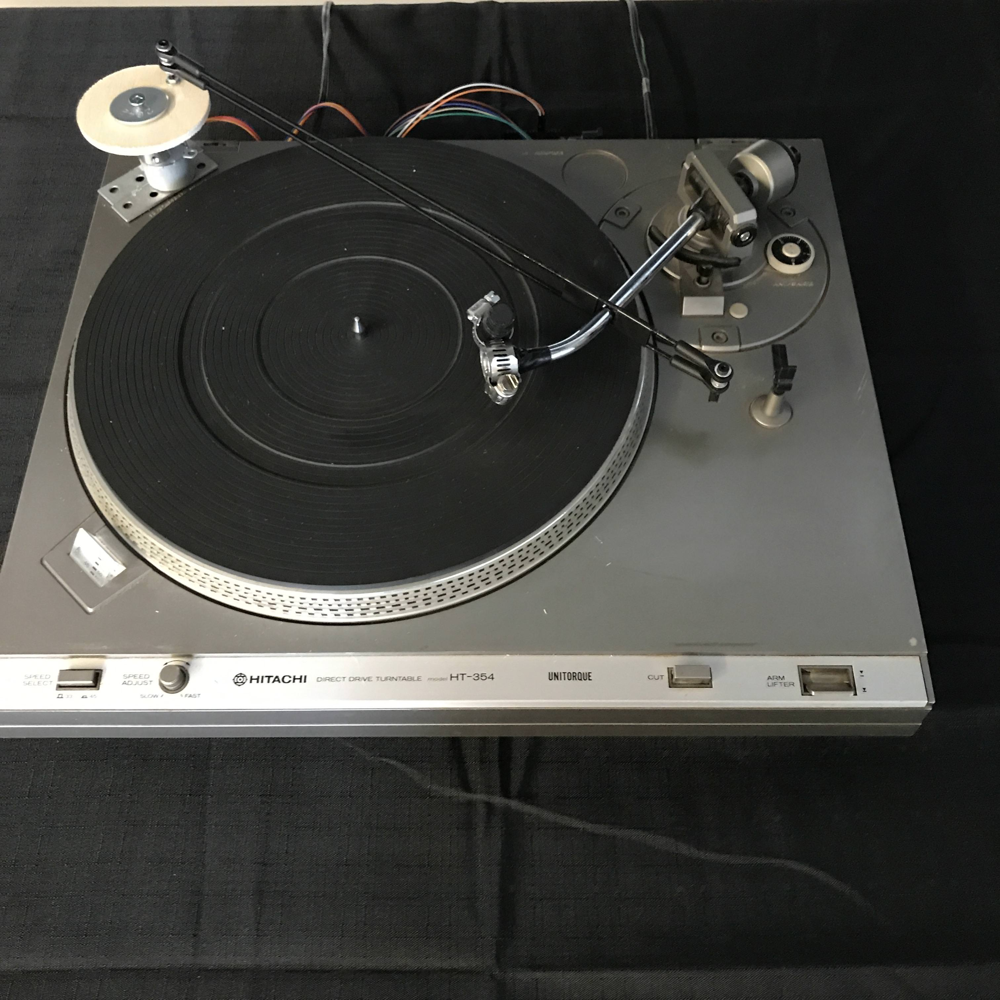
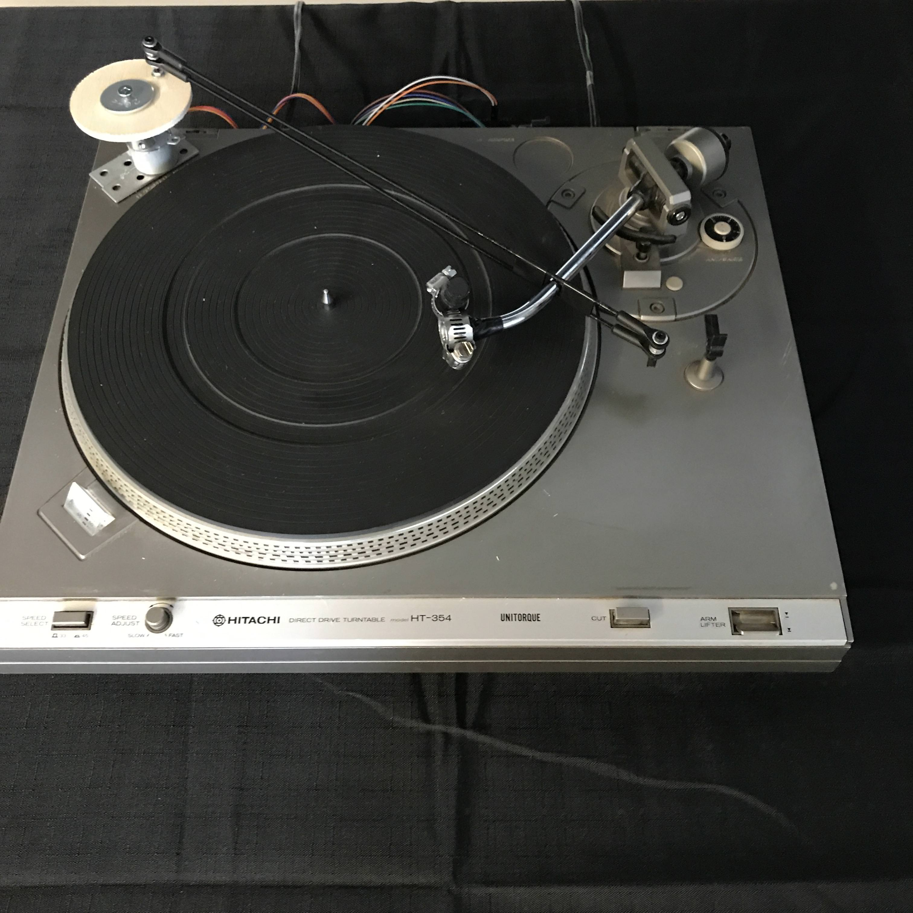

SOUNDS OF WEATHER (2018)
- MEMBERS:
- SHERMAN FONG - programming & audio engineering
- DIMITRI KONTOGIANNOS - concept & physical development
- EMILY TOOKER - physical development
- MATERIALS:
- Hitachi HT-354 Turntable, circular wooden discs, motor, charcoal
- Max/MSP
Sounds of Weather is a collaborative artwork created by Dimitri Kontogiannos, Sherman Fong and Emily Tooker. The artwork is meant to be an artistic visualization of weather data, using real-time weather data from OpenWeatherMap to control the motion of the writing arm. The interactivity of the artwork is dependent on the Arduino Uno microcontroller and Max 7. Max 7 is used to extract values from OpenWeatherMap, such as temperature data, in order to communicate with the Arduino; allowing control of the motor that holds the writing arm. Max 7 is also used to control certain aspects of the installation’s background ambient music that plays.

 

